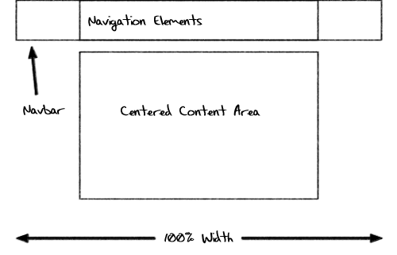

Right around the time I was developing the code for the Super Simple Navigation Bar I wrote about a while back, a friend came to me with an interesting problem. He needed a horizontal navigation bar like the one I was creating, with the following changes:
- The navigation bar background should stretch the full width of the screen (not just the width of the centered content area), but
- The navigation elements themselves should still be centered over the content area.
The sketch below outlines the basic design concept.

My friend had found some code elsewhere that did what he wanted, but it required two divs in addition to the navigation list to do its centering magic. He wanted to know if I could do it better.
This tutorial is the result of that challenge.
The HTML
I was able to reduce the number of extra divs required down to one. Sadly, I don’t think it’s possible to do this without at least one extra div — or turning to JavaScript instead of relying entirely on CSS.
<div id="nav">
<ul>
<li><a href="#">About Us</a></li>
<li><a href="#">Our Products</a></li>
<li><a href="#">FAQs</a></li>
<li><a href="#">Contact</a></li>
<li><a href="#">Login</a></li>
</ul>
</div>
If you’re familiar with the code for the Super Simple Navigation Bar, you’ll see it’s nearly identical, except that I’ve wrapped the ul tag in a div and moved the “nav” ID to that div.
This navigation code should be placed outside of your centered content container to allow us to stretch it the full width of the browser window in our CSS.
All in all, I think this is an acceptable amount of code for a navigation bar.
The CSS
Again, all I did here was take the previous navigation bar CSS and modify it a bit. The results are below:
#nav {
width: 100%;
float: left;
margin: 0 0 1em 0;
padding: 0;
background-color: #f2f2f2;
border-bottom: 1px solid #ccc; }
#nav ul {
list-style: none;
width: 800px;
margin: 0 auto;
padding: 0; }
#nav li {
float: left; }
#nav li a {
display: block;
padding: 8px 15px;
text-decoration: none;
font-weight: bold;
color: #069;
border-right: 1px solid #ccc; }
#nav li:first-child a {
border-left: 1px solid #ccc; }
#nav li a:hover {
color: #c00;
background-color: #fff; }
Our #nav div is stretched to 100% of the browser window and floated left. The “float: left” rule might seem a little strange, because we don’t want anything to wrap around our navbar.
This is a little trick that takes advantage of how floats behave. If a container contains nothing but a floated element, that container will collapse down to a height of zero, because floating an element takes it out of the normal document flow. That is, unless the container is floated as well. Then, suddenly, our container only collapses down to the size of the contained float.
Why is this important? That’s what lets us set a background color and border on our #nav element and have it still appear. If the #nav weren’t floated, it would collapse to a height of zero, rendering our background and border invisible!
Next, we’ve given the “#nav ul” a fixed width and used the auto margin trick to center it. The width here is critical: you want it to be the same width as your centered content area. In this example, that’s 800 pixels.
I’m making use of one pseudo-class to interesting effect here. The “:first-child” pseudo-class applies to any element that is the first child in its parent. In our case, this rule is finding the first “li” in our parent “ul”. We’re then applying a border to the left side of the anchor tag inside. Without it, our first element wouldn’t have a border on the left like the others appear to have. While we could technically do that with a class or ID on the first element, I think this solution is a little more elegant.
The rest of the CSS is identical to that in our simple horizontal navigation bar and is mostly presentational. You can customize the colors, padding, hovers and everything else to make the navigation bar your own.
You can see this code in action here. Hopefully others will find this solution as useful as my friend did!
Looks good, and easy to incorporate.
Could you take it another step and make it stick to the top of the browser window? It’s not something I’ve seen very often but have always liked it and thought it was a good idea because, especially on long pages, you don’t have to scroll back to the top to navigate to a different page.
I like that idea, Paul. I’ll write another article in the near future on how to do that. :)
Very nice. Multi-Level would be nice too ;) I have added it to my linklist :)
Along with your “#nav li a:hover”, you should add “a:focus” and “a:active” so the effect appears for keyboard navigation.
I tried this out and it works in Firefox and Safari but fails in IE 8.0.
The left border doesn’t show and the menu just sticks to the left side of the screen. When it didn’t work as I expected I added a full spectrum of reset CSS at the start. This did remove any margin from the navigator but otherwise the operation was unchanged.
I left the page accessable at this address:
http://shaverassociates.net/a/x.nsf/full-width-centered-navigation-bar
Perhaps I did something wrong.
Thanks for your web site. I’m learning bit by bit.
Happy New Year,
Rob:-]
I tried this on FF, IE6, IE7 and IE8. It looked the same for me on all three – not centered. Not all the way to the left, but left of center.
Tom
Firefox seems to understand
li:first-child a
and
li:last-child a
but not IE8 :(
I’m wanting to only have a vertical line in between each element, with nothing on each end.
What to do?
P.S. For those of you wanting to actually center the navigation elements, reduce the “800″ width down to the pixel length of your text.
Pingback: The Simple Secret to Good Dropdown Navigation
Pingback: Mike Capson » Blog Archive » The Simple Secret to Good Dropdown Navigation
Pingback: Best Photoshop, html, javascript and php tutorials » A Full Width Centered Navigation Bar
I was wondering if there was a way to get the menu bar to show up centered on the web page, but with no other color stretching to the end?
So in other words, the naviagtion elements would be completely centered and there would be background color but the color wouldn’t stretch all the way to the end of the page.
If anyone knows how to do that that would be great!
Thanks so much.
-Trevor
Looks great in FF. In IE8 it is floating to the left and there is an unwanted padding below the navbar (between navbar and main content area).
Is there an updated version of the code or did I do something wrong?
Looks great in FF. In IE8 it is floating to the left and there is an unwanted padding below the navbar (between navbar and main content area).
Is there an updated version of the code or did I do something wrong?
——————————————
copy of the code:
——————————————
header here
About Us
Our Products
FAQs
Contact
Login
content here
footer here
**sorry for the duplicate entry, wanted to paste the code I’m using**
Looks great in FF. In IE8 it is floating to the left and there is an unwanted padding below the navbar (between navbar and main content area).
Is there an updated version of the code or did I do something wrong?
——————————————
copy of the code:
——————————————
header here
About Us
Our Products
FAQs
Contact
Login
content here
footer here
Great!Thanks a lot..
Everything good for me, until I add the
float: left;
Then it loses my whole main content container.. no idea why..
Hi Noah,
It sounds like your container doesn’t have anything else in it other than the navigation bar. When you floated the navigation bar, thus removing it from the regular document flow, your content container collapsed to the smallest necessary height… which would have been 0px.
Workarounds include floating your content container, adding an “overflow: auto” rule to your content container, or adding more content below your navigation bar.
Hope that helps!
buttons are not centered in any of the modern browsers I have tried… IE8, FF, Safari, Chrome
Hi John,
No, this technique does not center the navigation elements within a navigation bar… it centers a navigation bar on your page. The elements within are still left (or right) aligned, as they rely on floats.
I’m having a similar problem as John. The buttons are still pushing to the left. I haven’t styled the content div yet or anything but the “nav” div sits inside a “container” div and I’ve matched the nav ul width to that but the buttons still sit to the left.
To center the nav bar on the page you need to adjust the width of the #nav ul to the size of your bar. That will center it to the page, well that’s what I did anyway, and it works on IE8 FF and Chrome any screen resolution. I took mine from 800px as in the example and adjusted it to 600px (which is the size of my nav bar. To get rid of the bar that stretched from side to side I took out all the references to background color, ie in the #nav (div). I replaced the background color in #nav li a and replaced it with an image to create a button. I then replaced the hover color with and image to create the hover effect except mine is with button images.
Thanks this tutorial helped me with my school project.
thnks but problem navigation element
That was the easiest CSS fix I’ve ever done – THANKS!
Hi,
I’ve just gone through your website and learnt a lot. You’ve solved my problems in many ways. I am stuck in a very simple thing and I am pretty sure you can solve my problem. If you go to http://www.lutonminibustravel.com and fill in the REQUEST A QUOTE form on the left hand side of the page in FIREFOX, it would work perfectly fine. now try this in Internet Explorer. I am sure it wouldn’t work. I need to know when it keeps saying “Please enter all required fields” and it doesn’t go through. PLEASE HELP ME!!
Regards,
Asif
I am having trouble with my horizontal navigation at the end of my page. i cannot get it to stay down at the bottom. it winds up after my last paragraph
This tutorial has been extremely helpful… thanks!
However, I am still encountering the problem of centering my navigation elements within the nav similar to some of the other people who have left comments here. Is there any way at all to not just center the nav div, but also the containing navigation elements? Perhaps another div within the nav? Any suggestions?
Incase someone was still wondering about this, the only thing you have to add to make the navbar stick to the top of the page is add this little snippet:
#nav{
position:fixed;
top:0;
left:0;
}
That should just about do it.
@Phil,
Make sure in your css you have the following:
body,html{
width:100%;
height:100%;
padding:0;
margin:0;
*****Text-Align:center;**** <<<<That's important, I.E Centering Fix (minus asteriks)
}
I would also make a #navContainer ID within the Nav just to make it easier to control
something like….:
#navContainer{
width:1000px;
height:30px;
margin:0 auto;
padding:0;
}
or something along the lines of that.
Pingback: Cascading Style Sheets Reference Links | kabayview.com
Thanks a million, great learning curve, you made my day.
GOD BLESS YOU !!
how do u get the CSS horizontal nav bar hover state to hover above a banner .gif please anyone? Please email back, thanks. Mike
I have this so far:
#navbar li:hover li a {
background-color: #6B8E23;
border-bottom: 1px solid #fff;
color: #000;
}
#navbar li li a:hover {
background-color: #32CD32;
}
/*——————————
Thanks for making this tutorial, now my life is much easier! lol
thanks for the blog.. was usefull.. well is it possible to create a rounded menu bar using ul orelse should me use div tags instead of ul..
I have tried this sicne the past 5 hours but I really don’t get it!
#block_2660 .nav{height:78px;line-height:78px; margin:0 auto; background:none;}
#block_2660 .nav_l{ display:none;}
#block_2660 .nav_r{display:none;}
#block_2660 .navigation{ padding:0px;}
#block_2660 .navigation li{float:left;width:100px;text-align:center; position:relative; padding-left:2px;z-index:2601;background:none;background: none; font-size:19px Arial,Helvetica,sans-serif;}
#block_2660 .navigation li a,.navigation li a:visited{display: block;text-decoration: none;color: #fff; width:100px;}
#block_2660 .navigation li a:hover,.navigation li.hover a{color: #fff;text-decoration: none;background:none; }
#block_2660 .navigation li.hover a:visited{_color:#353535;}
#block_2660 .navigation ul{display:none;overflow:visible;}
#block_2660 .navigation ul li{background-image:none;background-color:#969696; height:25px;line-height:25px;margin:0px; padding: 0px;}
#block_2660 .navigation ul li a,.navigation ul li a:hover{background-image:none;color:#ff8700;width:800px; margin:0px; padding: 0px;}
#block_2660 .navigation li ul { width:100px; display:none; position:relative; top:54px; left:2px; margin: 0px; padding:0; z-index:100; background-color:#e9e9e9;}
#block_2660 .navigation li ul ul { left:100px; top:20px; z-index:200; top:0; }
#block_2660 .navigation li ul li { background-color:#e9e9e9; border:0; background-image:none;}
#block_2660 .navigation li ul li a { color:#fff; font-weight:bold; text-align:center; background-image:none; }
#block_2660 .navigation li ul li a:visited { _color:#fff; background-image:none; font-weight:bold; color:#ffff;}
#block_2660 .navigation li ul li a:hover { color:#fff; background-image:none; background:#282828;}
#block_2660 .navigation li ul li.hover{ background:#fff;background-image:none; width:120px;}
#block_2660 .navigation li.hover ul a{background-image:none; }
#block_2660 {*z-index:500;}
What if someone wanted to have some of the links on the far right and some on the far left? About and Contact being examples of two links they’d want on the right and leaving navigational links on the left?
I’m doing it right now using some stuff, but it’s also using some inline coding and I’d much prefer to eliminate as much inline stuff as possible.
Hi — this tut was great. Thank you for relaying this in very digestible bits of information.
that’s nice man
thx :)
It’s a little odd that page proclaims to describe how to centre something, but it doesn’t actually centre it; comments going back over 3 years have pointed this out but nothings been done about it.
Hi Dave,
The navigation area is centered within the page, but yes, the links are left aligned. I’m sorry that it wasn’t specifically what you are looking for, but it certainly helped me at the time!
Great Article !
I am looking to implement a good UI kit for my Site but ones like Jquery UI Doesn’t have an In-Built Nav Bar support. Creating a Navigation is easier than I thought !
Thanks,
Shalabh
FAILS MY NEEDS !
i need to control the placement of compleated nav.
simple stated i want a compleatd nav bar to beplaced any where i may desire ..
10-9-2013
Pingback: blog navigation